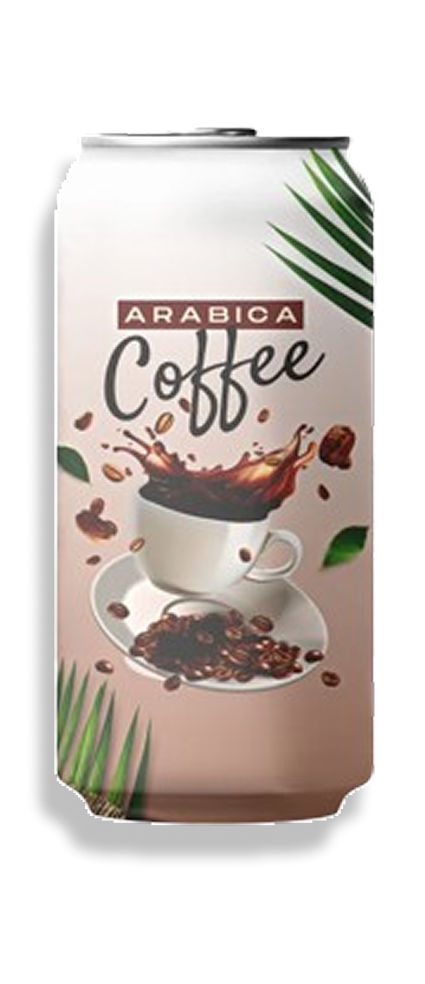
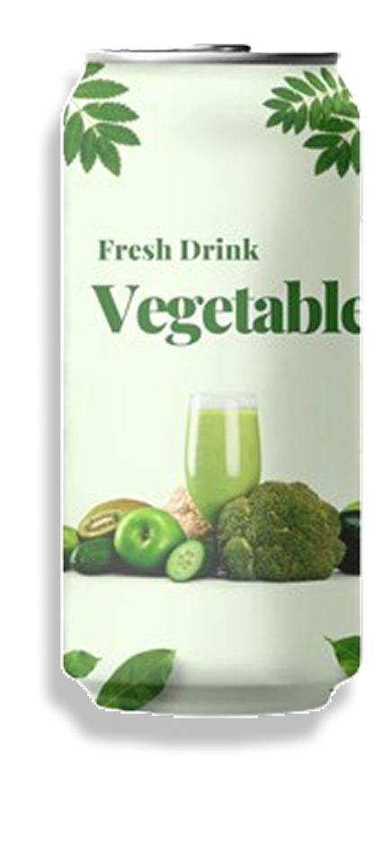
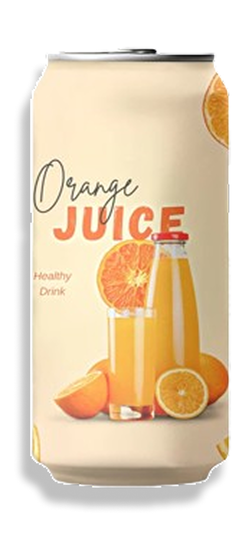

Coffee flavour
A coffee can flavor typically captures the rich, aromatic essence of freshly roasted beans, delivering a bold and satisfying taste in every sip. It often features deepnotes of roasted coffee.
A coffee can flavor typically captures the rich, aromatic essence of freshly roasted beans, delivering a bold and satisfying taste in every sip. It often features deepnotes of roasted coffee.

A vegetable flavor is fresh, natural, and often slightly earthy, capturing the essence of garden-picked produce. It can range from the mild sweetness of carrots and peas

An orange can flavor typically captures the bright, refreshing essence of freshly picked oranges, delivering a sweet and tangy taste in every sip. It often features vibrant citrus notes with a zesty and uplifting aroma.
